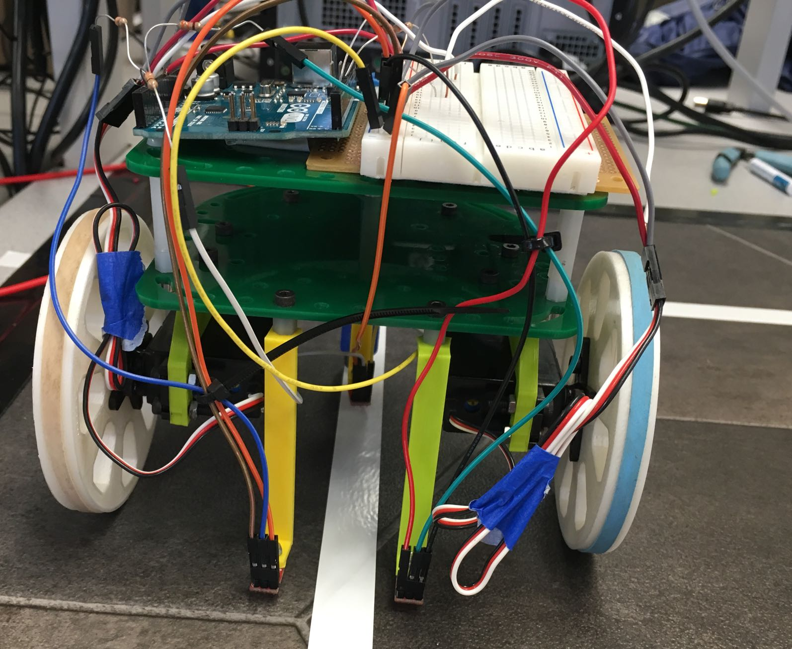

Milestone 1
- Getting our robot to successfully follow a line
- Getting our robot to successfully traverse a grid in a figure eight
- Developing a robust control system, and
- Getting our robot to complete these tasks at a reasonably high speed
- If the robot detects that neither of its sensors are on the line, it will drive straight
- If the robot detects that its left sensor is on the line, it will veer left to correct course
- If the robot detects that its right sensor is on the line, it will veer right to correct courses
Goals:
The purpose of this milestone was to design a motion control system for our robot.
The tasks we set out to complete included:
Additionally, we focused on:
Materials:
The only materials used for this milestone that weren’t used in lab one were 3 QTR-1A reflectance sensors (datasheet here).
These sensors have three pins, VIN, GND, and OUT. Each sensor outputs a voltage at its OUT pin that corresponds with the lightness or darkness of the surface below it.
In our setup, the OUT pin of each sensor is tied to a separate analog input of the Arduino Uno controlling our robot. As such, each of these analog inputs will read in a value between 0 and 1023 corresponding to the lightness or darkness of the area under it.
Line Following
We equipped our robot with two line sensors in its front, designed to be far enough apart to straddle a line of electrical tape (see image below).
Our line following code is written with three cases in mind:
A snippet of this code is shown below (Please note: Our line-following code is written under the assumption that our robot will follow a grid of white tape on a black background. The threshold sensor values (300 in this case) will change under different circumstances.)
//Case: traveling along line --> drive straight
if (sensor_values[0] > 300 && sensor_values[1] > 300) { drive_straight();}
//Case: drifting off to the right --> correct left
else if (sensor_values[0] < 300) { veer_left(); }
//Case: drifting off to the left --> correct right
else if (sensor_values[1] < 300) { veer_right(); }
Some code from the helper functions drive_straight(), and veer_left() is shown below.
drive_straight() sets both wheels to rotate in the forward direction at a moderate speed.
void drive_straight(){
servoL.write(95);
servoR.write(85);
}
veer_left() increases the speed of the right wheel relative to its speed set by drive_straight(), and rotates the left wheel backward. veer_right() is defined nearly identically to veer_left().
void veer_left(){
servoL.write(80);
servoR.write(55);
}
Check out our robot following this jagged line: